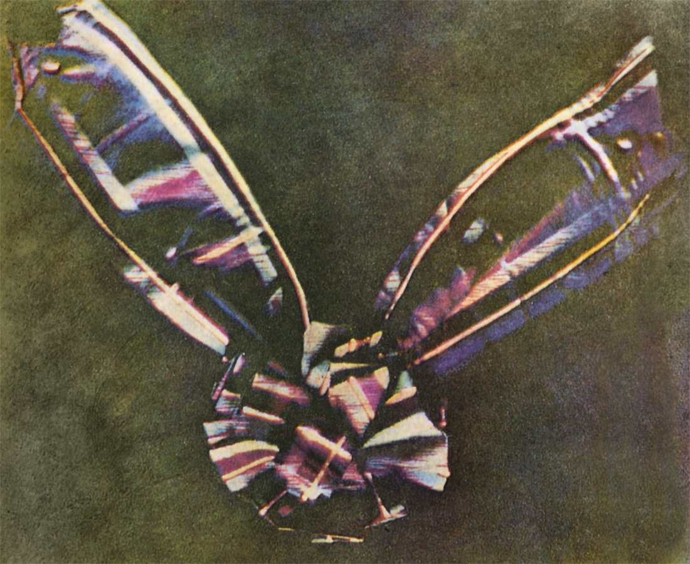

A fényképezés technikai feltételeit, vagyis a fény optikai és kémiai hatását már korábban ismerték.
A fényképezőgép őse, a camera obscura képalkotását már az arabok is feljegyezték i. sz. 900 körül.
Használata a 17. század óta széles körben elterjedt volt.
Hogy készül gyakorlatban a fénykép…?
Lényegében a fényképezés során irányított fotokémiai folyamatok játszódnak le. A fény rávetül a
fényérzékeny anyaggal bevont felületre, minek következtében a fényérzékeny anyagban a fény
fotokémiai változásokat eredményez.
A gyakorlatban ezüstsókat használtak fényérzékeny anyagként, melyet zselatinba ágyazva vittek rá az
átlátszó hordozóanyagra. A fényképezőgép zárszerkezetének nyitásakor (exponálásakor) a nyílás előtt
lévő tárgyak képe rávetítődik a fényérzékeny anyagra, és ott rejtett (látens) kép jön létre. Ahhoz,
hogy a kép látható legyen elő kell hívni, így jön létre a negatív kép. Amikor negatív képen
keresztül újabb fényérzékeny réteget világítunk meg, létrejön a valóságnak megfelelő pozitív kép.
A kezdetek…
Joseph Nicéphore Niépcenek 1826-ban (vagy 1827-ben) elsőként sikerült a camera obscurában
kirajzolódott képet fényérzékeny anyagon (a fény hatására megkeményedő ún. júdeai aszfalton)
rögzítenie. Az ablakából udvarát és a szomszéd házat ábrázoló felvétel, mely a világ első fennmaradt
fénykép 8 órás expozícióval sikerült rögzítenie. Azonban eljárás igen durva, gyenge
felbontóképességével rossz minőségű képet adott, így nem felelhetett meg a közönség elvárásának,
felfedezője ezért még nem léphett vele a nyilvánosság elé.
A magyar szakirodalomban és a fotótörténettel foglalkozó írásokban leggyakrabban a Kilátás a
dolgozószobából címen találhatjuk meg a képet.
A fotográfia történetének fontos állomását jelentette Talbot és Daguerre 1841-es találmánya a még ma
is használatos negatív-pozitív eljárás….
1838-ban Louis Jacques Daguerre, Joseph Nicéphore Niépce eljárását használva ezüsttel bevont
rézlemezt jódgőz fölé tartott, miáltal fényérzékeny ezüstjodid keletkezett. Az expozíciót követően
keletkező lappangó képet végül higanygőz segítségével sikerült láthatóvá tennie.
Végül hosszas kísérletezés után (két évvel Henry Fox Talbot után) Ő is rájön, hogy tömény
nátrium-kloriddal (konyhasó) képes megállítani a feketedést. Megszületett az első dagerrotípia.
A felvételeket kezdetben síküveglapra exponálták, majd később celluloid filmre.
François Arago, fizikus és csillagász nagy érdeklődést mutatott Daguerre felfedezése iránt, miután
Daguerre bemutatta neki a találmányt, ő pedig 1839. január 7-én bejelentette a Francia Akadémián és
megvételre ajánlotta a szabadalmat a kormánynak.
Arago 1839. augusztus 19-én a Tudományos és Képzőművészeti Akadémia együttes ülésén hihetetlen
nemzetközi érdeklődés közepette, a vegyi eljárást részletezve ismertette a dagerrotípia készítését.
A kormány élt az ajánlattal és évi 6000 frank életjáradékot fizetett Daguerrenek és 4000-et Niépce
örökösének.
A felfedezést ugyanezen a napon, 1839. augusztus 19-én a világnak ajándékozta, hogy bárki szabadon
foglalkozhasson a fényképezéssel.
Ezen a napon a fényképészet megszületését ünnepli a világ.
Fényképezés hatalmas sikerét jól példázza, hogy alig egy évvel a bemutató után, 1840-ben, már több
mint 20 nyelven jelent megróla a leírás, többek között magyarul is.
A sors fintora, hogy William Henry Fox Talbot 1839. január 31-én a londoni Royal Societynek
bemutatott negatív-pozitív eljárása, a talbotípia megelőzte a francia bejelentést, azonban olyan
szabadalmi megkötések voltak rajta, melyek nem kelhettek versenyre a „világnak ajándékozott”, vagyis
közkincs dagerrotípiától. A sors másik fintora, hogy Daguerre a magáról elnevezett dagerrotípiához
nem sokat tett hozzá, azt gyakorlatilag Joseph Nicéphore Niépce dolgozta ki, azonban Niépce korai
halála miatt a szerződésen Daguerre nevét írták az első helyre, az elkészült képrögzítési eljárás is
Daguerre nevét kapta.
Az első fényképezőgép egyszerű fából készült doboz volt. Egyetlen üvegdarabból csiszolt lencséje
nagyon kevés fényt eresztett a fényérzékeny lemezre, ezért a expozíciós idő több percig tartott.
Emiatt a lefényképezendő személyeket igen fárasztó volt mozdulatlanul modellt ülni.
1888-ban George Eastman új fényképezőgéppel jelent meg a piacon, melyen a zárat huzallal lehetett
felhúzni, és gombnyomással kioldani. A gépet Eastman KODAK No. 1. névre keresztelte. Az új géppel
bárki képes volt jó minőségű felvételeket készíteni. Ezt 1890-ben öt új típus követte, melyhez
kidolgozta a celluloidos tekercsfilmet.
A következő évtizedekbenhatalmas fejlődésnek indult a technika. Rövidült a záridő és egyre
kifinomúltabb fényképezőgép (a váz és az objektívek) jelentek meg.
A celluloid film 1887-es, majd az első, George Eastman által kifejezetten amatőr- és hobbifotósok
számára készíttt gép 1888-as piacra dobásával, illetve az előhívólaborok megjelenésével sokak
számára elérhetővé vált a fotózás.

Az első színes képet az angol fizikus James Clerk Maxwell készítette….
Maxwell jött rá először, hogy bármely színt elő lehet állítani a vörös, a zöld és a kék fény
különböző arányú keverésével. Rábeszélte fotográfus ismerősét Thomas Suttont, hogy fényképezzenek le
három képet ugyanarról a skótkockás masniról úgy, hogy felvételenként csak a színszűrőket cseréljék
ki a lencse előtt. A három kép elkészítése után ezeket egyszerre vetítette ki három különböző
vetítővel, mindegyiknél olyan szűrőt használva, mint amilyennel a kép készült. Amikor beállította az
élességet a három kép végül egyetlen színes képet alkotott.
1861-ben. A színes képek az 1910-es évekig ritkaságszámba mentek. Ezek többsége eredetileg
fekete-fehér kép volt, melyet utólag kézzel színeztek.
Az első színes-filmet már 1907-ben forgalomba hozta a Kodak cég. Azonban a színeket valósághűen
visszaadó filmre,vagyis a színes fotográfia valódi megszületésére 1935-ig várni kellett
1937-ben Dr. Edwin Land több évnyi kutatómunka után megalapította Polaroid Corporation nevű cégét,
hogy olyan kamerát fejlesszen ki, amely azonnal, ott helyben elő is hívja a képet. Eztán még tíz
évnyi fejlesztő munka következett, mielőtt 1947. február 21-én bemutathatta 18×24 cm-es kameráját és
a polaroid eljárást az Optical Society of America-nak. A kereskedelmi forgalomba kerülést követően
jelentős sikereket ért el, noha a polaroidfilm 9-10-szer is drágább volt a normál filmnél, és
kizárólag a Polaroid által gyártott kamerákba volt jó. Az első Polaroid diapozitív 1957-ben, míg az
első színes Polaroid kép csupán 1963-ban készülhetett el.
1959-ben került forgalomba az első teljesen automata fényképezőgép, az Agfa Optima. 1964-ben a
Pentax kifejlesztette a TTL (through-the-lens, azaz az optikán keresztül) képkereső-rendszert,
amivel a ma megszokott módon a keresőbe nézve közvetlenül az objektív által rajzolt kép vált
láthatóvá.
Digitális fényképezőgép…
A videótelefonok kifejlesztésén fáradozó AT&T Bell Laboratories a kutatások számos
„melléktermékének” egyikeként 1973-ban előállította a világ első digitális fényképezőgépét.
A számítógépek rohamos fejlődésével együtt járt a digitális fényképezőgépek gyors fejlődése is,
1986-ra a Kodak digitális gépe már egy megapixeles képek készítésére is alkalmas volt, azonban ezek
akkoriban körülményes előhívása és magas ára miatt egészen az 1990-es évek végéig, 2000-es évek
elejéig gyakorlatilag alig voltak piaci forgalomban. Az első fényképezőgép, mely számítógépes fájl
formátumban készített képet a Fuji DS-1P volt, 1988-ban, 16 megabájtos memóriakártyával, amit egy
külön elem működtetett. Az első, kereskedelmi forgalomban kapható digitális kamera a Dycam Model 1
(avagy Logitech Fotoman) volt. A CCD képszenzorral ellátott gép digitálisan tárolta a képeket és
közvetlenül csatlakoztatható volt egy számítógéphez letöltés céljából. 1991-ben a Kodak piacra dobta
a Kodak DCS 100-ast, a világ első digitális tükörreflexes fényképezőgépét, mely már az 1988-ban
bevezetett JPEG sztenderdben készítette a felvételeket.
Flash kártya megjelenése…
1995-ben a Casio QV-10-es gépe volt először felszerelve LCD kijelzővel, az első CompactFlash kártyát
pedig az 1996-ban megjelent Kodak DC-25-ben lehetett használni.
Szintén 1995-ben jelent meg a fényképezőgép és a videókamera első kereskedelmi forgalomban is
elérhető digitális ötvözete, a rövid videók készítésére is alkalmas Ricoh RDC-1.